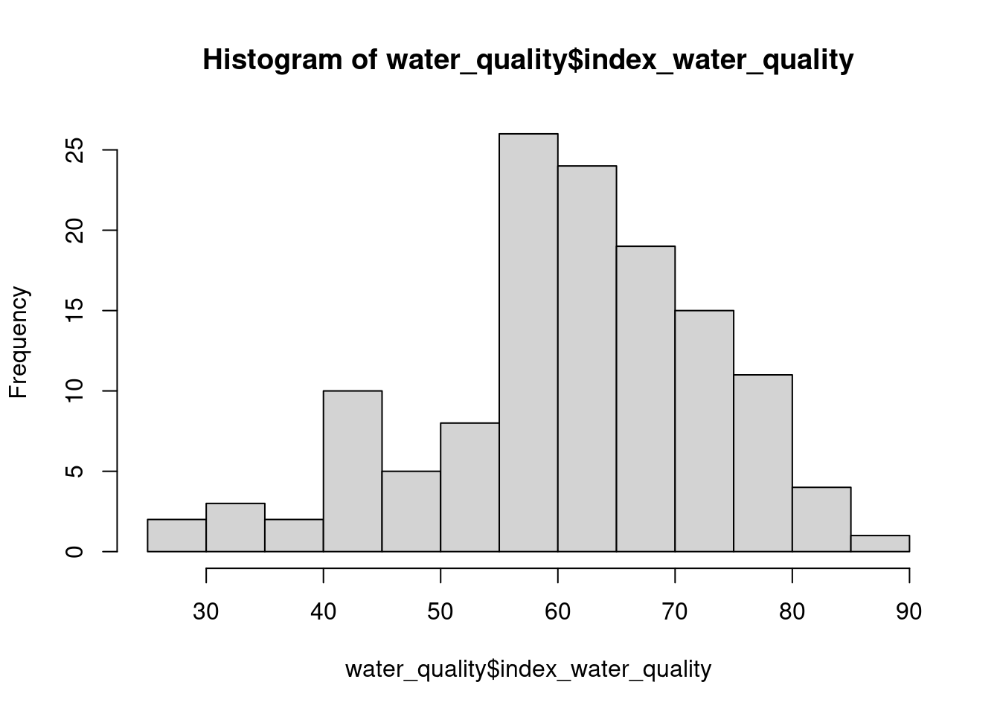
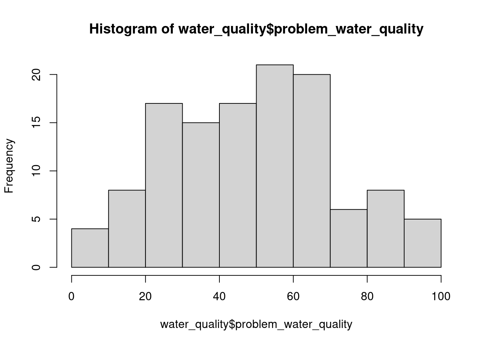

Datasets
Learning objectives
- Organize the R Markdown workflow.
- Upload necessary packages.
- Import datasets into R.
1. Set up
In the last worksheet, we introduced R Markdown. One important thing to know about R Markdown is that this file is independent of the environment, meaning that all objects used in the file must be created within the file.
a. Packages
It starts with calling the appropriate packages, usually done at the beginning of the file:
b. Importing datasets
We mentioned using built-in datasets. But what if we want to explore our own data? We would have to import our data into R. The most common (and most convenient) format for datasets is csv files. The read_csv function from tidyverse allows us to upload a dataset:
## Error: 'example.csv' does not exist in current working directory ('/stor/home/lg28373/322E_LG/bookdown').What could have gone wrong?
R could not find a file called example.csv in the working directory.
Go to Canvas and download the dataset for today’s materials. Then upload this file in the same folder as this R Markdown document (called the working directory). Then we can import the dataset:
But what if we want to work with this dataset? We need to save it to our environment:
2. City of Austin Open Data Portal
For your project, you will use data from the City of Austin Open Data Portal.
For example, let’s look at the Watershed Reach Index and Problem Scores: - Access the documentation about the dataset to learn about the information it contains. - Preview the dataset to check for the format of the variables. - Export the dataset to import it in RStudio!
Note: We can import the dataset directly to RStudio with API endpoint:
Try it! Represent the distribution of index_water_quality and problem_water_quality wiht a histogram, separately. What is the difference between these two variables?


These two variables represent different ways to assess water quality with different scales (100 is best or worst, respectively). We can only know that by looking at the documentation!
What could be some potential issues for importing data directly from the portal?
Be aware that if you get data directly from the web like that it might:
- No longer be available at some point.
- Be updated.
It might be a better idea to export and save the file locally.
3. Other data sources
Only download files from trusted websites! To assess whether a website can be trusted or not, consider the following factors:
- Check the source of the website: Websites of universities, government agencies, or well-known platforms (e.g., GitHub, Kaggle, and Data.gov…).
- Look for HTTPS and security
- Examine the quality of the website: Trustworthy websites often look polished and contain clearly written content, whereas scam sites may look poorly designed or filled with ads.
Recommended Resources:
- Worksheet keys are posted at the end of the week on Canvas under Programming Tools.
- Recommended readings: https://rafalab.dfci.harvard.edu/dsbook/importing-data.html
readrPackage Documentation https://readr.tidyverse.org/- Get started on how to use open data with https://data.austintexas.gov/videos